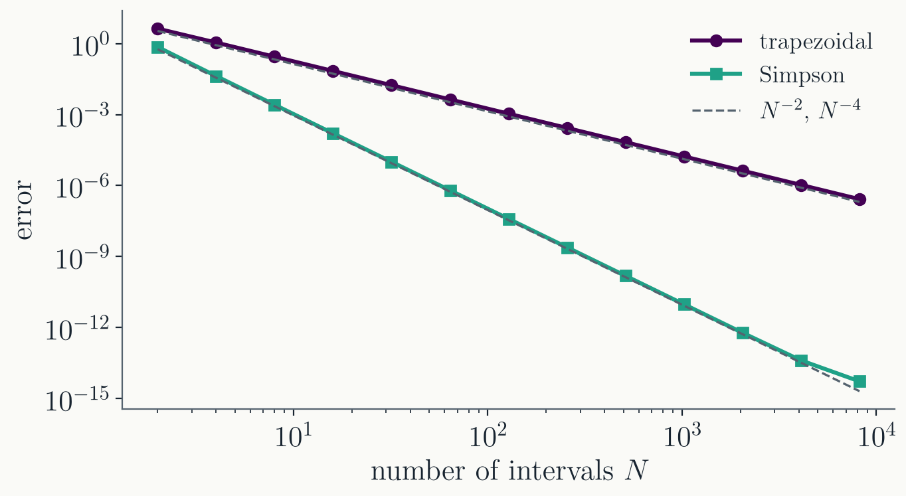
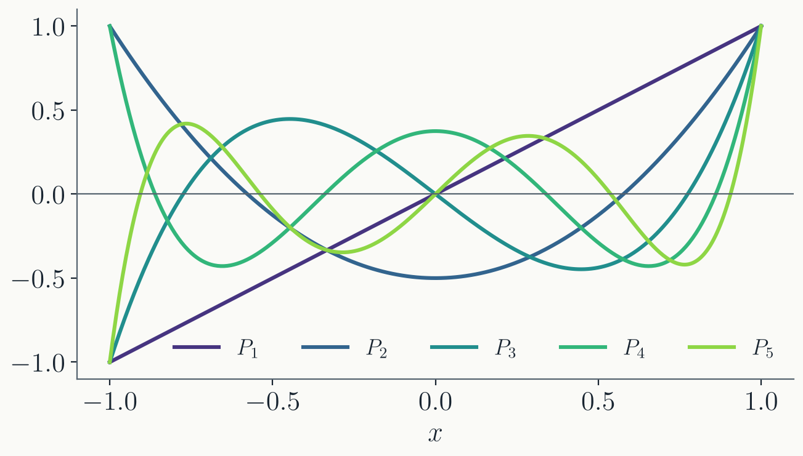
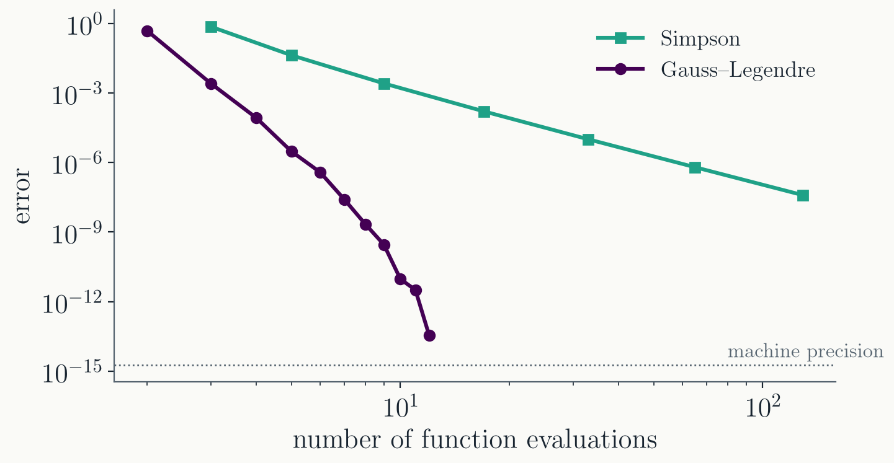

This converges,
but the error shrinks only as $h$.
Why the error is $O(h)$
On one interval, the rectangle ignores the variation of
$f$. By Taylor expansion,
$f(x) - f(x_i) \approx f'(\xi)\,(x - x_i)$, so one interval
contributes error
$$\int_{x_i}^{x_{i+1}} \left[f(x) - f(x_i)\right] dx
= \tfrac12 f'(\xi_i)\,h^2.$$
There are $N = (b - a)/h$ intervals. Summing
$N$ terms of size $h^2$ costs one power of $h$:
$$\varepsilon = \frac{h}{2}\sum_i f'(\xi_i)\,h
\approx \frac{h}{2}\int_a^b f'\,dx
= \frac{h}{2}\left[f(b) - f(a)\right].$$
Notation.
$\varepsilon = O(h^p)$ means $|\varepsilon| \le C h^p$ as
$h \to 0$, with $C$ independent of $h$. Halving $h$ divides
the error by $2^p$; on a log-log plot against $N$, the slope
is $-p$.
Trapezoidal rule
Replace $f$ on each interval by its
linear interpolation, and integrate:
Sketch: expand $f$ around each interval's
midpoint; the trapezoid overshoots the exact integral by
$\tfrac{1}{12} f''(m)\,h^3$ per interval, and the $N$
per-interval errors add up to $O(h^2)$.
The error comes from the curvature:
straight lines ($f'' = 0$) are integrated exactly.
The Euler–Maclaurin formula
The trapezoidal error has an exact
expansion, the Euler–Maclaurin formula:
The pattern
$1, 4, 2, 4, \dots, 2, 4, 1$: each parabola spans two intervals
and weights its midpoint by 4.
Simpson's rule: the error
The error is
$$\varepsilon = \frac{h^4}{180}\left[f'''(a) - f'''(b)\right]
+ O(h^6),$$
two orders better than trapezoidal, for the same number of
function evaluations.
A parabola guarantees exactness for
quadratics. Simpson's rule is in fact exact for
cubics as well.
Why? A cubic minus its interpolating
parabola is odd about the midpoint of the pair; its integral
vanishes by symmetry.
Symmetric rules gain an extra order for
free.
Measured convergence
Both rules on
$\int_0^2 x^4 \sinh^{-1}(x)\,dx = 8.15336\ldots$, against the
exact value:

Measured slopes: $-1.99$ and $-4.02$,
matching the $h^2$ and $h^4$ error formulas.
Part II · Adaptive refinement
How many points are enough?
Refine until it stops changing
The right $N$ is usually not known in
advance. Instead, keep doubling it, reusing the values already
computed:
Each level
evaluates $f$ only at the new midpoints; no value is computed
twice.
Estimating the error
The trapezoidal error is
$\varepsilon \approx \tfrac{h^2}{12}[f'(a) - f'(b)]$, and the
boundary term does not change under refinement: halving $h$
divides the error by 4.
So the difference between consecutive levels
estimates the error:
$$\varepsilon_n \approx \tfrac13\,(S_n - S_{n-1})$$
Refine until $|\varepsilon_n|$ (or
$|\varepsilon_n / S_n|$) drops below your tolerance.
Cancel the error instead
If $S_{n-1}$ carries error $e$ and
$S_n$ carries $e/4$, a linear combination can cancel $e$
entirely:
$$S'_n = \frac{4 S_n - S_{n-1}}{3}$$
Writing $S'_n$ out in
terms of the function values shows that it is exactly
Simpson's rule on the finer grid.
Its error estimate:
$\varepsilon_n \approx \tfrac{1}{15}(S'_n - S'_{n-1})$.
Strategy: run the doubling trapezoidal
levels $S_1, S_2, \dots$, form $S'_n$ at each level, stop when
the estimate is below tolerance.
Implementation
template <typename F>
std::tuple<bool, double> adaptive_simpson(const F& f, double a, double b,
double tol) {
// repeat the doubling trapezoidal levels, form S' at each level,
// stop when the error estimate drops below tol
}
Same conventions as the root finders:
{converged, value}, a maximum refinement depth,
false if the tolerance is never reached.
The tolerance discussion from root finding
applies unchanged: absolute or relative, and there is a floor
set by rounding.
Part III · Gauss quadrature
Choosing the nodes
Moving the nodes
Every rule so far has the shape
$$\int_a^b f(x)\,dx \approx \sum_{i=0}^{n-1} w_i\,f(x_i),$$
with the $x_i$ fixed on an even grid. Rules of that family
are called Newton–Cotes formulas.
Now let the $x_i$ move. That doubles the
free parameters: $n$ weights and $n$ node positions,
$2n$ in total.
A polynomial of degree $2n - 1$ has $2n$
coefficients. Chosen well, $n$ evaluations can integrate
every such polynomial exactly.
With $n = 5$, five function values can
integrate any degree-9 polynomial exactly.
Gauss–Legendre quadrature

On $[-1, 1]$: the nodes $x_i$ are the $n$ roots of the
Legendre polynomial $P_n(x)$, and the weights are
$$w_i = \frac{2}{(1 - x_i^2)\left[P'_n(x_i)\right]^2}.$$
Nodes and weights, $n = 10$
$\pm x_i$
$w_i$
0.1488743389816312
0.2955242247147529
0.4333953941292472
0.2692667193099963
0.6794095682990244
0.2190863625159821
0.8650633666889845
0.1494513491505806
0.9739065285171717
0.0666713443086881
The nodes come in $\pm$ pairs with equal
weights, and none of them are endpoints. They cluster toward
the endpoints, where interpolation error is largest.
In practice: tabulated, or computed once
by Newton's method on $P_n(x) = 0$.
Any interval
Gauss–Legendre lives on
$[-1, 1]$. For $[a, b]$, substitute
$x = \tfrac12(b - a)\,t + \tfrac12(b + a)$:
A linear change
of variable and one overall factor.
Convergence of Gauss quadrature
The same test integral,
$\int_0^2 x^4 \sinh^{-1}(x)\,dx$, cost measured in function
evaluations:

With 12 evaluations the error is
$4 \times 10^{-14}$; Simpson would need about $10^5$
intervals. The error falls geometrically with $n$, not as a
power of $h$.
Why it is exact at degree $2n-1$
Take any polynomial $f$ of degree
$\le 2n - 1$ and divide by $P_n$:
$$f(x) = P_n(x)\,q(x) + r(x), \qquad \deg q,\ \deg r \le n - 1$$
The $q$ piece integrates to
zero: $P_n$ is orthogonal to every polynomial of
lower degree, and $\int P_n q = 0$.
The rule never sees $q$:
at the nodes, $P_n(x_i) = 0$, so $f(x_i) = r(x_i)$.
The $r$ piece is easy:
$\deg r \le n - 1$, so $r$ is its own interpolation through
the $n$ nodes, and the weights $w_i = \int_{-1}^1 \ell_i(x)\,dx$
integrate it exactly.
The rule never sees the part of $f$ that it
would integrate to zero anyway.
Drawbacks of Gauss quadrature
Non-smooth integrands. The derivation assumed
$f$ is well approximated by a high-degree polynomial. A kink,
a singularity ($1/\sqrt{x}$), or a discontinuity breaks the
geometric convergence.
Oscillatory integrands.
$\sin(1/x)$ near $0$ is not well approximated by any
polynomial.
No cheap error estimate.
Different $n$ share no nodes, so estimating the error
requires a full recomputation.
Use Gauss quadrature for smooth integrands;
use adaptive Simpson when $f$ is poorly understood or an error
estimate is needed.
Where this goes next
Next lecture: improper
integrals (infinite ranges, endpoint singularities) and
integrals in more than one dimension.